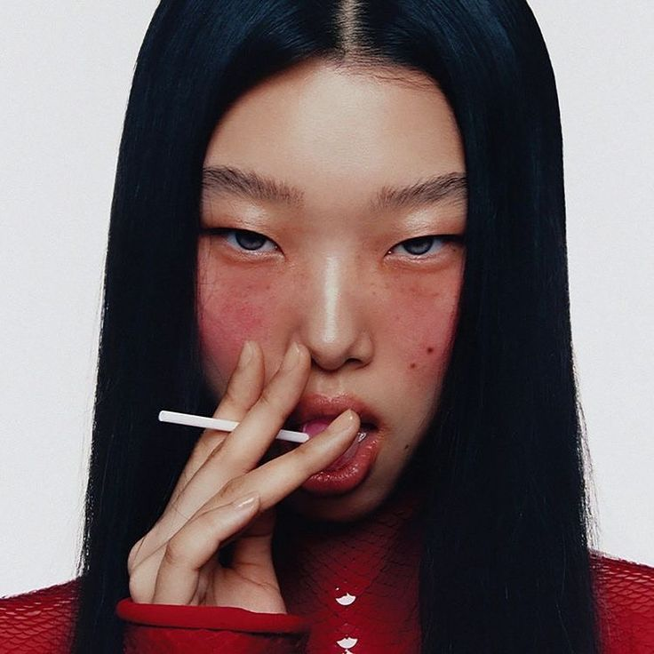

5차 PROJECT
DETAILPAGE
VIVABELL

비바벨은 독창적이고 아방가르드한 감성을 담은 화장품 브랜드 웹사이트로, 개성 있는 색조 화장품을 선보이는 브랜드 정체성을 극대화하는 데 초점을 맞췄습니다. 기존의 전통적인 뷰티 웹사이트들과 차별화된 비주얼을 구축하며, 사용자의 브랜드 경험을 극대화할 수 있도록 UI/UX를 설계했습니다. 본 프로젝트에서는 강렬한 컬러 팔레트와 미니멀한 타이포그래피를 조화롭게 활용하여 브랜드의 독창성을 강조했으며, 정적인 페이지가 아닌 인터랙티브한 요소를 적용해 사용자 참여도를 높였습니다. 특히, 제품 설명이 고정된 상태에서 이미지가 변화하는 슬라이드 기능을 추가하여 제품 정보를 직관적으로 전달할 수 있도록 구현했습니다. 비바벨 웹사이트의 디자인과 코딩을 100% 직접 담당하며, 브랜드 아이덴티티를 유지하면서도 웹 퍼포먼스를 최적화하는 데 주력했습니다. 이를 통해 개성 있는 브랜드의 감성을 시각적으로 표현하는 동시에, 사용자 친화적인 인터페이스를 구축하는 것이 중요하다는 점을 배웠습니다. 앞으로는 보다 정교한 인터랙티브 디자인과 데이터 기반의 UI/UX 개선을 적용하여, 차별화된 사용자 경험을 제공하는 방향으로 나아가고자 합니다.
VIVABELL DitailPage
포트폴리오 바로가기